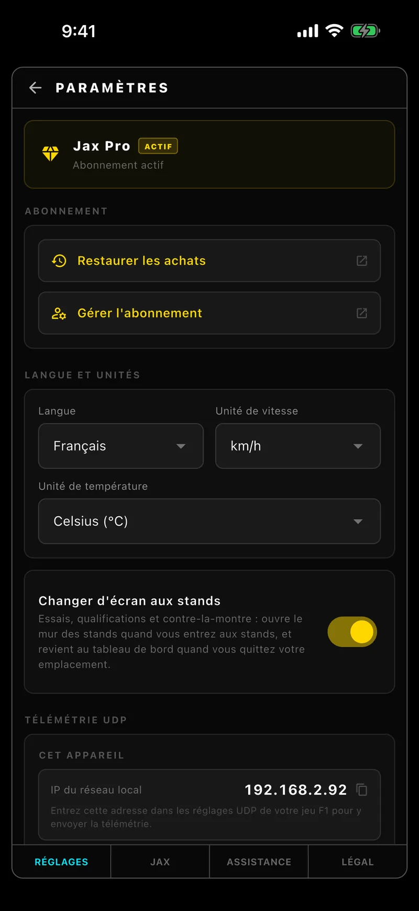

Comment ça marche
Ce qui est gratuit et ce que comprend Jax Pro
La version gratuite vous permet de courir, d’enregistrer et de voir votre activité. Jax Pro vous aide à comprendre, revoir, gérer et améliorer votre pilotage.
Gratuit pour toujours
- Tout le tableau de bord, y compris son tracé en direct plein écran
- Mur des stands : tout le CLASSEMENT du TIMING pour chaque pilote, GAME, ME, et SETUP avec vos réglages par nom
- Préparer la session → À propos : l’aperçu du circuit — carte avec la ligne de départ/arrivée, longueur, virages, zones DRS et règles 2026
- L’enregistrement de chaque session ; il n’est jamais bloqué
- Historique des sessions : toutes vos sessions listées, avec des statistiques tirées de toutes
- Votre session la plus récente en entier : faits marquants, classement, historique des tours, tracés et replay
- Bibliothèque de réglages : tous les réglages utilisés, listés
- Jax : les alertes de sécurité urgentes — voiture de sécurité, VSC, drapeaux rouge, jaune et bleu, une pénalité qui vous est infligée, une voiture arrêtée devant, le trafic à la sortie des stands — et votre tour à la ligne
- Le chronométrage en direct et l’enregistrement des tours en contre-la-montre
- Les conseils de course, les démos intégrées, les paramètres, la confidentialité, l’assistance et la sauvegarde iCloud
Ajouté par Jax Pro
- Jax, votre ingénieur de course complet : voitures qui reviennent, trafic, pneus, carburant, énergie, fenêtres d’arrêt, dégâts, météo et rythme
- Mur des stands : TIMING EN DIRECT, AUTO, MAP et TRACE (avec comparaison de deux tours)
- Toutes vos sessions précédentes en entier : détails, faits marquants, historique des tours, tracés et replay
- Les valeurs de vos réglages, leurs comparaisons, noms et notes, partout où ils apparaissent
- Préparer la session : virages, priorités de réglage, pneumatiques, perte aux stands et analyse du circuit, Mes données, et votre plan de séance
Essai et forfaits
Jax Pro est offert en abonnements App Store mensuel et annuel, tous deux avec un essai gratuit de 14 jours pour les comptes admissibles. Pendant l’essai, tout ce qui précède est disponible. Annulez avant la fin et vous n’êtes pas facturé.
L’admissibilité, le prix dans votre pays et l’offre exacte sont affichés par la feuille d’achat Apple avant que vous confirmiez. Apple facture et renouvelle l’abonnement jusqu’à ce que vous l’annuliez dans les réglages d’abonnements de votre compte Apple.

S’abonner et restaurer
Chaque fonction verrouillée ouvre l’écran d’abonnement avec une phrase sur ce qu’elle débloque, les forfaits et la restauration des achats (Déjà abonné ? Restaurer). Dès que vous vous abonnez, vous arrivez directement à ce que vous avez touché, sans redémarrage. La carte Jax Pro des paramètres indique votre statut.
Vos données ne sont jamais prises en otage
La version gratuite ne limite jamais ce qui est enregistré. Chaque session et chaque réglage est conservé et listé, quel qu’en soit le nombre. Une nouvelle session devient celle que vous pouvez ouvrir en entier ; la précédente garde sa place dans la liste. Vous pouvez supprimer une session à tout moment.
Si un abonnement prend fin, rien n’est supprimé, tronqué ni réordonné. Réabonnez-vous et les mêmes données se rouvrent.
Tout essayer avec les démos
Les démos intégrées (Paramètres → ASSISTANCE → Découvrir les démos JMD) montrent chaque vue Jax Pro et l’ingénieur de course complet avec des données d’exemple, pour voir ce que vous obtiendriez avant de décider. Une démo n’accorde ni n’enregistre jamais d’abonnement.